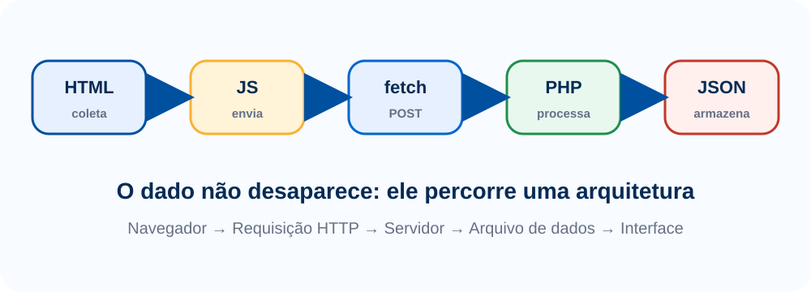

Cadastrar objeto
Informe os dados do item perdido ou encontrado.
Uma central simples para cadastrar objetos perdidos ou encontrados na faculdade. O formulário envia os dados para o servidor, o PHP salva em JSON e a página exibe os registros.
Informe os dados do item perdido ou encontrado.
Lista carregada do arquivo JSON por meio do PHP.
Nesta aula, o objetivo é visualizar o caminho completo da informação: do formulário no navegador até o arquivo JSON no servidor.
